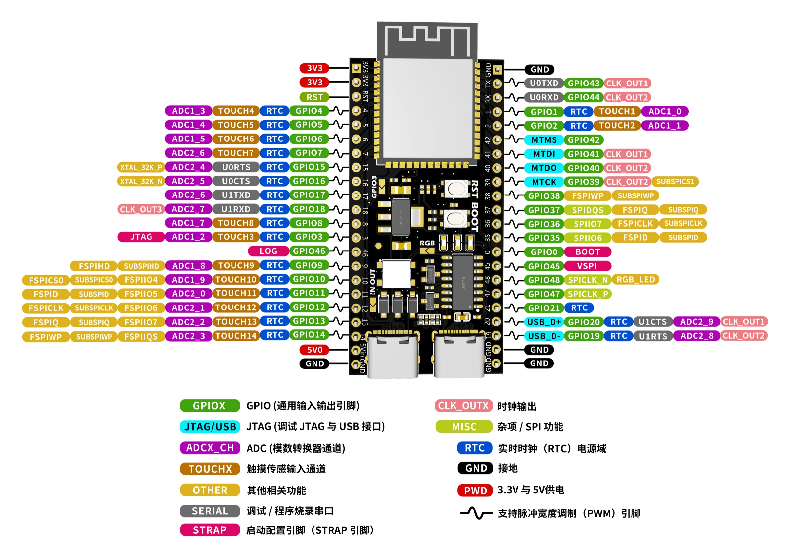
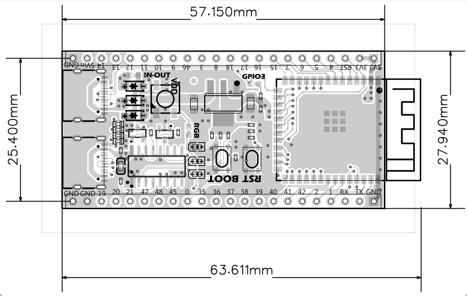
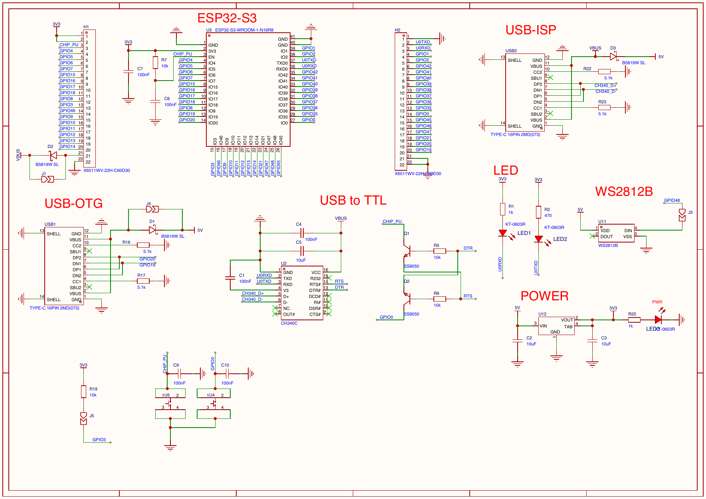

Confirmed development board
ESP32-S3
WROOM-1-N16R8
当前资料中的主板采用 ESP32-S3-WROOM-1-N16R8 模组：16 MB Quad Flash、8 MB OPI PSRAM、双 USB-C 与 2 × 22 排针。页面将“原理图/实测结果”和“芯片通用能力”明确分开。
Board facts
已确认的实板配置
模组型号来自原理图；Flash、PSRAM、芯片修订版和串口链路另有只读检测记录佐证。
On-board connections
板载接口、按键与指示灯
两只 USB-C 的用途不同。保留原生 USB 或下载通道时，应避开其对应 GPIO。
| 部件 | 连接 | 用途与注意事项 |
|---|---|---|
| USB-OTG USB-C | GPIO20 = D+；GPIO19 = D− | ESP32-S3 原生 USB 2.0 Full-Speed 信号。若使用原生 USB，勿再把 GPIO19/20 分配给普通外设。 |
| USB-ISP USB-C | CH340C → U0RXD / GPIO44、U0TXD / GPIO43 | 用于 UART0 下载和日志；DTR/RTS 经自动下载电路控制复位/Boot。 |
| RST 按键 | CHIP_PU / EN | 复位主芯片。 |
| BOOT 按键 | GPIO0 | 启动配置脚；下载时按住可进入下载模式，不建议作为普通信号长期占用。 |
| RGB LED | GPIO48 | 板载 WS2812B 数据输入；若需要板载彩灯，保留该脚。 |
| 串口指示灯 | U0RXD、U0TXD | 两只 LED 分别接 UART0 收发线；高频串口活动时会闪烁。 |
Pin planning
引脚规划：先避开这些占用
ESP32-S3 GPIO 矩阵很灵活，但模组存储、USB、下载与启动配置已经限定了若干脚位。
高风险或已有板载用途
GPIO35–37：N16R8 的外部 Flash / OPI PSRAM 总线相关脚，即使引出也不要作为项目外设。GPIO19 / 20：原生 USB D− / D+；保留 USB OTG 时不复用。GPIO43 / 44：UART0 下载与日志；复用会影响 CH340C 串口。GPIO0 / 3 / 45 / 46：启动配置、JTAG/输入限制等敏感用途，除非已验证启动行为，否则不作为首选。GPIO48：板载 RGB LED 数据线；要使用灯效时保留。
本项目的低冲突分配
- 音频 I²S：
BCLK=GPIO4、LRCLK=GPIO5、DATA OUT=GPIO6、DATA IN=GPIO7。 - microSD SPI：
CS=GPIO10、MOSI=GPIO11、SCK=GPIO12、MISO=GPIO13。 - 其余可按项目从
GPIO1/2、GPIO8–18、GPIO21等已引出、无明显板载冲突的脚中选择。 - 改线后必须同步修改固件的 GPIO 映射；“芯片支持”不等于“该板可随意使用”。
Reference image
排针与复用功能图
此图用于识别排针位置和芯片功能。颜色表示芯片可复用能力，不表示每个功能都适合当前项目同时启用。

Power & dimensions
供电、尺寸与安装边界
原理图可确认 5 V 到 3.3 V 的板载转换与双 USB 的二极管隔离，但稳压器的具体型号未标明。
接电前先确认焊盘状态
- USB-OTG 与 USB-ISP 的 VBUS 分别经过肖特基二极管汇入板上 5 V 网络，避免两个 USB 口直接互相回灌。
- 板载稳压器把 5 V 转为 3.3 V；具体稳压器型号和可持续外供电流，现有图纸不能确认。
IN-OUT焊盘/跳线会影响 5 V 排针的输入或输出关系。外接功放、传感器前，请先用万用表验证实际状态。- 大功率外设（例如 MAX98357A + 扬声器）应使用独立、足额的 5 V 电源，并与主板共地。
安装参考
- 主体板长约 57.15 mm，宽约 27.94 mm。
- 天线端的最大长度标注约 63.61 mm；排针区域高度标注约 25.40 mm。
- 天线附近请避免大面积金属、接地铜皮和高电流线束，以免削弱 Wi‑Fi / BLE 信号。

Bring-up
Arduino / 上传建议
以下是针对已检测到的 16 MB Quad Flash + 8 MB OPI PSRAM 的推荐起点，不是唯一可用的应用分区方案。
| 菜单项 | 建议值 | 原因 |
|---|---|---|
| Board | ESP32S3 Dev Module | 与当前检测到的 ESP32-S3 最匹配。 |
| Flash Mode / Size | QIO 80MHz / 16MB (128Mb) | 本板是 Quad Flash，而非 Octal Flash。 |
| PSRAM | OPI PSRAM | 启用实测到的 8 MB 内封装 Octal PSRAM。 |
| Partition Scheme | 16M Flash (3MB APP/9.9MB FATFS) | 适合需 OTA 与文件存储的通用项目；数据布局变更前应备份。 |
| Upload Mode / Speed | UART0 / 460800 | CH340C 在 460800 已验证稳定；921600 在该链路上曾复现失败，必要时降至 115200。 |
Schematic evidence
原理图中的已确认连接
可放大查看模组型号、双 USB-C、CH340C、自动下载电路、WS2812B、按键与排针网络名称。

Chip capability
芯片能力与项目边界
以下来自 ESP32-S3 芯片资料，属于平台能力；并不保证全部接口均已被本开发板引出或适合同时使用。
Wi‑Fi + BLE
支持 2.4 GHz 802.11 b/g/n、Bluetooth 5 LE 与 BLE Mesh；不支持 Bluetooth Classic / A2DP。
双核与向量指令
双核 Xtensa LX7，最高 240 MHz；可用于 DSP、音频和轻量级边缘 AI 加速，但没有独立 NPU。
I²S / SPI / USB
提供 2 路 I²S、SPI、SD/MMC、USB OTG、UART、I²C、ADC、PWM、RMT、TWAI 等能力。
需由固件启用
芯片支持 Secure Boot v2 与 Flash Encryption；当前只读检测显示这两项均未启用。
Local sources
本页依据
ESP32-S3/1778810837723945.pdf：开发板原理图与板卡资料。ESP32-S3/芯路城.pdf：ESP32-S3 芯片功能资料。ESP32-S3/1783913303242785.pdf：开发板排针与尺寸资料。ESP32-S3_电路板信息.md：USB 串口日志与 esptool 只读检测记录。